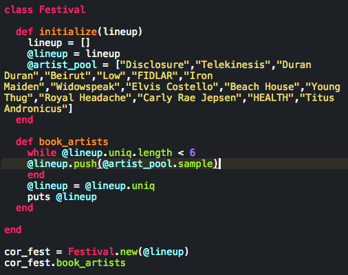
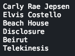

input:output
Welcome to the blog!
Welcome to the blog!
I have spent a lot of time over the last couple weeks solving different challenges using Ruby. Until this week, those challenges have been one-and-done affairs, once we got our program to give us the output we desired, we could move on to the next challenge. But what happens when we need to solve the same problem over and over again? How can we scale our creativity in a way that will make it so that we do not need to reinvent the wheel each time we approach a recurring issue?
Creating classes allows us to scale our solutions to these problems, we can use classes to create objects with inherited characteristics that give us the ability to create solutions quickly, even though our inputs may vary.
In case you haven't been able to tell, I am a big music fan, and one thing that I have always wondered about is how these big festivals can book and schedule all these artists with so many different variables to consider. With my finely honed Ruby skills, I have created a Festival class, which allows me to book many iterations of my own 1-day music festival taking place in my 600 square foot apartment this summer, "cor_fest", tickets will be very limited.
As you can see below, I have initialized my class with a lineup an empty lineup-array, and a pool of artists who have upcoming or recently released albums. Obviously, they have contacted me and are interested in playing the inaugural cor_fest to create buzz around their new releases.

I'm ecstatic with the quality of artists who have reached out, so I really don't have a preference who plays, but I only have time for 6 one sets before my landlord shuts me down, so I created a method that will select 6 random bands from my pool. I made sure to use the .uniq method to ensure I didn't let any band get two slots in my schedule.
My book_artists method worked, and created a nice group to play cor_fest:

It's easy to see how I can continue to add functionality to this class. I need to assign these bands time slots, and decide if they should all play for the same amount of time, if they require different amounts of set-up time, etc.As the head promoter of cor_fest, I can see that these issues will occur for every year of my festival. It's clear that as I solve these problems during my first year of operation, I should do so using a class, saving myself future headaches, and allowing me to spend more time enjoying all that cor_fest has to offer.